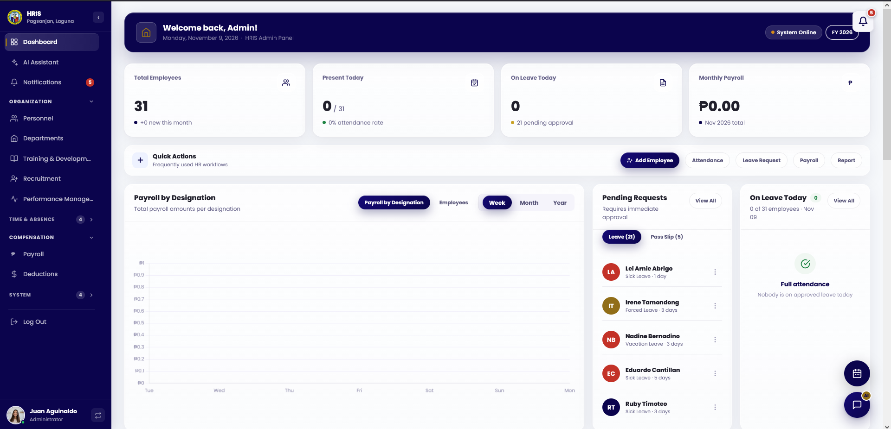
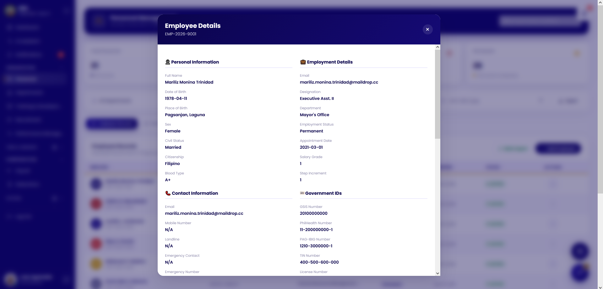
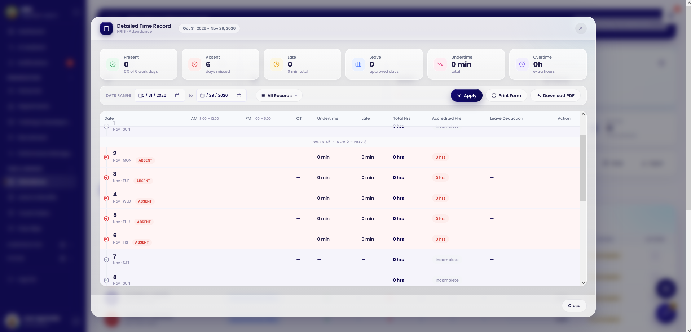
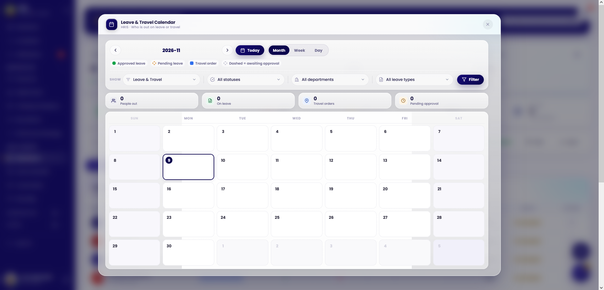

Human Resource Information System · Municipality of Pagsanjan, Laguna
PrimeHR Pagsanjan
A web human resource information system for the Municipal Government of Pagsanjan, Laguna. One employee record connects the 201 file, daily time record, leave, travel orders, payroll, trainings and recruitment.
System user evaluation
Strongly Agree on every ISO/IEC 25010:2023 criterion
132 employee respondents · overall evaluation 4.87
Tick marks 4.21, the Strongly Agree threshold. Black box testing: 100% passing rate from 10 IT and system experts.
- Web applicationLaravel 13 and Blade for HR, admin and mayor
- MySQL databaseOne record shared by web
- 4 user rolesEmployee, HR, admin and mayor
- 26 officesMunicipal departments in the seeded roster
What PrimeHR does
Personnel records, daily time records, leave applications, travel orders and payroll inputs are usually spread across paper 201 files, spreadsheets and separate logs. Every request moves between offices by hand, and the same employee data is typed more than once.
PRIME-HRIS brings these tasks into one system. HR and administrators work from a single employee record. The mayor gets a dashboard for approvals and oversight. The web application, mobile API and MySQL database all read and write the same data.
The system also includes an AI assistant that answers HR questions from the live database, and a recruitment module that parses résumés, anonymises applicant data and produces a CSC-weighted, explainable shortlist.
Scope. PrimeHR supports HR operations but does not replace CSC, COA or legal review. Final hiring decisions remain with the Human Resources Management Office. The records used in the repository demo are synthetic test data, not real employees.
Research team and adviser
Borje, Princess Leriraine S.
Researcher
Cuevas, Angelica D.
Researcher
Demerin, Luke Jeremy O.
Researcher
Villarica, Mia V., DIT
Thesis adviser and Associate Dean, College of Computer Studies
College of Computer Studies, Laguna State Polytechnic University, Santa Cruz Main Campus, Santa Cruz, Laguna. Submitted November 2026 in partial fulfillment of the Bachelor of Science in Information Technology. With thanks to the Human Resources Management Office (HRMO) of Pagsanjan.
Problem statement
According to researchers on the HR processes of the municipality, many activities need manual files and processes, making it difficult to capture the information needed in an organized and efficient manner. It may cause scattered and duplicate pieces of information, delays in processing information, difficulties in the monitoring of employee transactions, and a lot of effort to gather and collate data. The absence of a system also makes it difficult to monitor and capture a record of the transactions that happen within the HR processes
General objective
To design and develop an AI-enabled Human Resource Information System for the Municipality of Pagsanjan, Laguna that integrates the Human Resource functions developed by the researchers and provides provisions for the integration of Recruitment Management, Promotion Management, and Training and Development modules developed through collaboration.
Methodology
Design and Data
The study utilized a developmental research design to design, develop, test, and evaluate an AI-driven Human Resource Information System (HRIS) for the Municipality of Pagsanjan, Laguna. The respondents consisted of the Administrator, Regular, Casual, Job Order, and Co-terminus Employees, totaling 132 total respondents, with data gathered through interviews, brainstorming, observation, internet research, document collection, and surveys. A structured System User Evaluation Questionnaire based on the study’s objectives and selected ISO/IEC 25010:2023 software quality characteristics was used to assess the developed HRIS.
System Development
- Requirement analysis. Consultations with the HRMO and review of existing government forms: CS Form 6, the DTR, travel orders and pass slips, together with CSC PRIME-HRM and RA 10173 requirements.
- Design. Role matrix for employee, HR, admin and mayor; MySQL schema for personnel, attendance, leave, payroll and recruitment; a REST API to serve the client-side.
- Development. Laravel web application and the AI assistant.
- Testing. 68 PHPUnit unit and feature files covering the QR kiosk, AI scope, leave access, payroll filters and exports; API smoke tests for the recruitment pipeline.
- Deployment. Hosted on a physical server on the researcher's personal computer, utilizing a cloudflare tunnel.
Web application
Laravel 13 (PHP 8.3+), Blade, Tailwind CSS 4, Vite, Laravel Sanctum
Database
MySQL 8; SQLite is used for zero-setup local runs and tests
AI assistant
Natural-language query layer with intent routing, scope guard, policy grounding, document search and charts
Tooling
PHPUnit, Cloudflared, and Composer/npm
Evaluation
The system was assessed by 10 IT and system experts and 132 employees from the Municipality of Pagsanjan, Laguna.
System features and screenshots
Features
Employee 201 records
Profiles, addresses, contacts, family, education, eligibility, work experience, government IDs (GSIS, PhilHealth, Pag-IBIG, TIN), legal requirements, documents and photos.
Attendance and DTR
Schedules, daily time records, QR kiosk punching, corrections, exemptions, late and undertime tracking, plus live accredited-hours and salary logs.
Leave and benefits
Leave types, accrual rates, balances, CS Form 6 applications, approvals, leave calendar and leave monetisation requests.
Payroll support
Salary computations, deduction types and schedules, loans, employee deductions and printable or exportable payslips.
Travel orders and pass slips
Filing, approval, companion responses, history, official forms and printable or downloadable PDFs.
Training and development
Training records, certificates, admin verification and exports for each employee.
Recruitment and AI screening
Vacancies, résumé upload, parsing, anonymisation, a CSC-weighted Fit Score, ranked shortlists and an audit trail.
AI assistant and chatbot
Natural-language questions over HR data, charts, document search and scope guards that keep answers grounded in Pagsanjan HR policy.
Reports, exports and audit
Personnel, payroll, leave-benefit, deduction, pass-slip and training exports, plus an audit trail of privileged actions.
Screenshots

Public homepage

Sign-in


Admin dashboard


Employee 201 record


DTR record


Leave calendar
Results
Statistical results
The System User Evaluation used a five-point scale, interpreted as Strongly Agree for a mean from 4.21 to 5.00. The table reports the total mean of each ISO/IEC 25010:2023 criterion with the standard deviation (SD) and verbal interpretation.
| Criterion | Mean | SD | Interpretation |
|---|---|---|---|
| Functional suitability | 4.85 | 0.40 | Strongly Agree |
| Performance efficiency | 4.84 | 0.44 | Strongly Agree |
| Compatibility | 4.84 | 0.42 | Strongly Agree |
| Interaction capability | 4.86 | 0.36 | Strongly Agree |
| Reliability | 4.86 | 0.36 | Strongly Agree |
| Security | 4.85 | 0.41 | Strongly Agree |
| Maintainability | 4.86 | 0.45 | Strongly Agree |
| Flexibility | 4.86 | 0.34 | Strongly Agree |
| Safety | 4.84 | 0.43 | Strongly Agree |
| Overall evaluation | 4.87 | 0.34 | Strongly Agree |
Black box testing
Ten (10) IT and system experts performed black box testing on the developed HRIS to determine whether the tested functions operated according to their documented requirements and expected behavior. The prepared test cases covered the functions for HR Personnel, Employees, and System Data Processing and Output. Each actual result was compared with the documented expected result and recorded as either Pass or Fail; no failures were recorded.
| Coverage | Testers | Failed | Passing rate |
|---|---|---|---|
| Overall (HR Personnel, Employees, and System Data Processing and Output) | 10 | 0 | 100% |
Notes on the source tables
- Performance efficiency: the manuscript's discussion also refers to an Item 6 (AI chatbot response time, mean 4.87) that is not among the supplied indicators.
- Maintainability: the supplied table gives a total of 4.86 with a standard deviation of 0.45, while the manuscript states 0.34.
- Flexibility: the supplied table had overlapping columns. The total shown (4.86, SD 0.34) follows the manuscript.